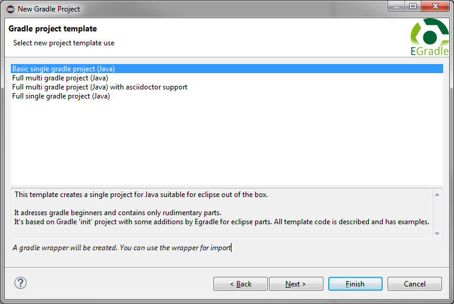
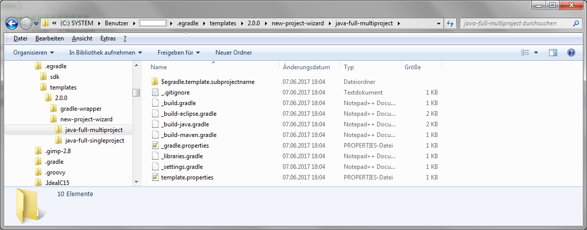

User guide
User guide
With EGradle user can create single - and multi gradle projects out of the box, with full eclipse support.
There are two ways to open the
New project wizard
:
File -> New ->
Project...:
select
EGradle -> Gradle Project and click on Next.
This will show up wizard:
Enter your wanted (root) project name and the location (or use default):
Select your wanted template. Currently EGradle has following templates included:

At next wizard page - depending on which template was selected - details can be configured.
At a multi project you must specify at least one sub project. In the next example there were 3 sub projects defined:
After click on
Finish
project structure is generated and imported. The result will look like
next image:
Its nearly the same as Full multi project (Java) but it supports
also a full working asciidoctor support.
The setup is exactly the same, only the output changes a little bit: There will
be always a documentation subproject appearing as shown in next image:
Just call the gradle task asciidoctor and your document is build in html and in pdf:
At a single project you must specify nothing more - all input fields are filled with defaults or being optional:
After click on
Finish
project structure is generated and imported. The result will look like
next image:
d Nearly the same as Full single project (Java) but adresses gradle beginners.
New project wizard is located in file structure at
$user.home/.egradle/templates/$egradle.version/new-project-wizard inside an template folder.
For example: The template for the Full gradle multi project (Java) is located at:

Following rules are given:
| Variable | Replaced by |
|---|---|
| egradle.template.name | Name of template |
| egradle.template.projectname | Name of project |
| egradle.template.groupname | Name of group defined in gradle build files. This will be used for uploads into a maven repository |
| egradle.template.subprojectname | Current subproject name |
| egradle.template.subprojects.include | Include string for gradle.settings. Is a comma separated list of all sub projects |
| egradle.template.java.version | Contains a string defining the java version - e.g. "1.8" for Java 8 |
| egradle.template.gradle.version | Contains a string defining the gradle version used inside generated gradle wrapper. If not defined a default value will be used:"4.3" |
template.properties will not be copied
but evaluated and defines the meta information about the template
features:
| Key | Value |
|---|---|
| name | The name for the template |
| description | The description for the template |
| priority | The priority for the template. The template with the lowest value will be on first position at the wizard dialog and automatically selected. When not defined the priority is set to 100 |
| feature.newproject.type.multiproject | when "true" then this template generates multi projects |
| feature.newproject.supports.java | when "true" java questions the template supports java |
| feature.newproject.supports.gradlewrapper | when "true" this template wants to have gradle wrapper copied to the target destination before input is done |
| feature.newproject.supports.headlessimport | when "true" the wizard will automatically import the generated projects. Otherwise the import dialog will be shown to user where some selections - e.g. not to use the gradle wrapper etc. - can be set. This is normally only necessary on creating new templates , for debugging etc. |
$user.home/.egradle/templates/$egradle.version/new-project-wizard/java-full-singleproject $user.home/.egradle/templates/$egradle.version/new-project-wizard/custom-template-1
Change the template.properties inside folder custom-template-1:
Change the content of the template files like you want. The content is just applied to rules, variables and then copied to target destination.
You must restart your eclipse instance and open EGradle new project wizard. Enter project location and go to template selection. Now you will find your custom template appearing.